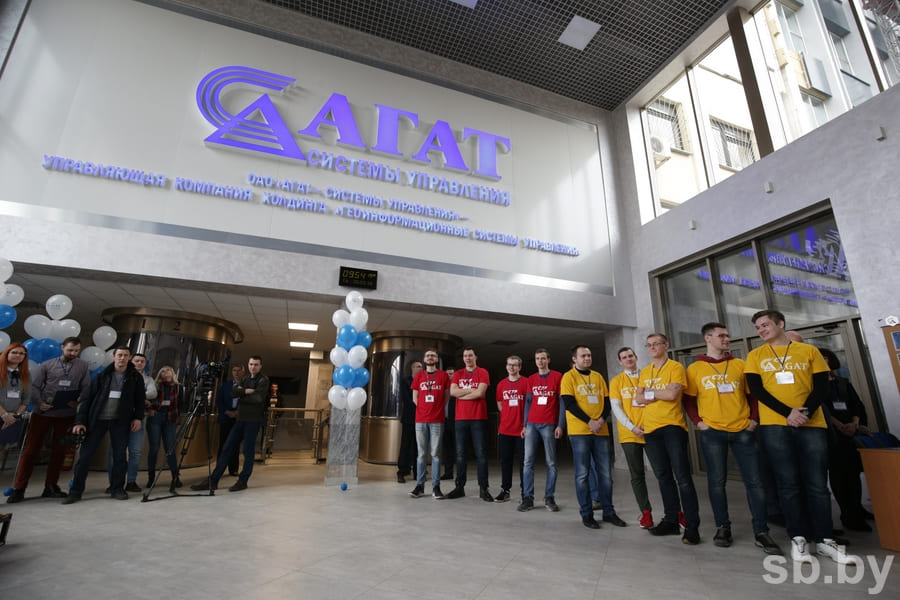
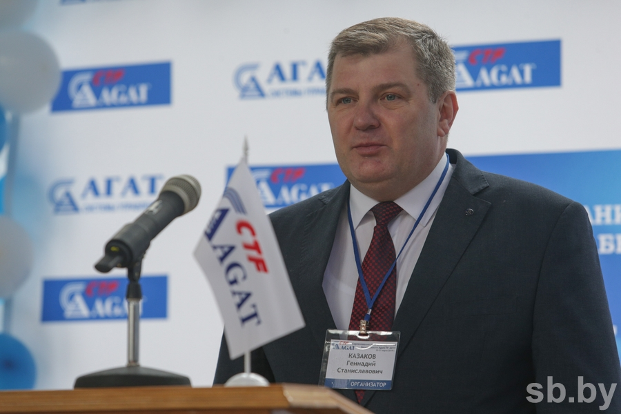
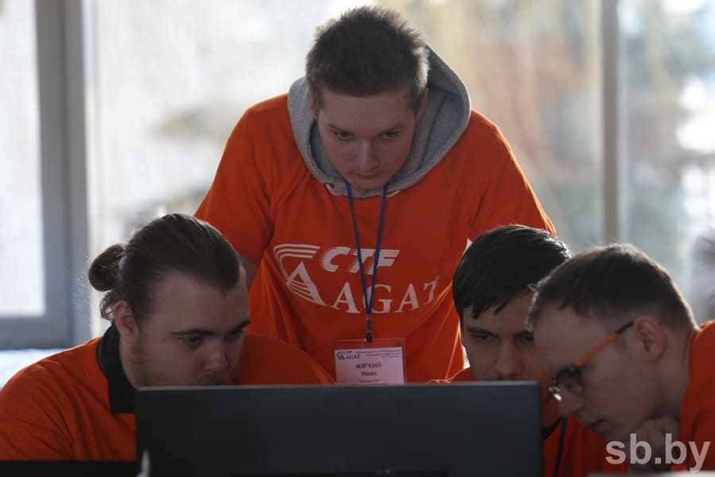
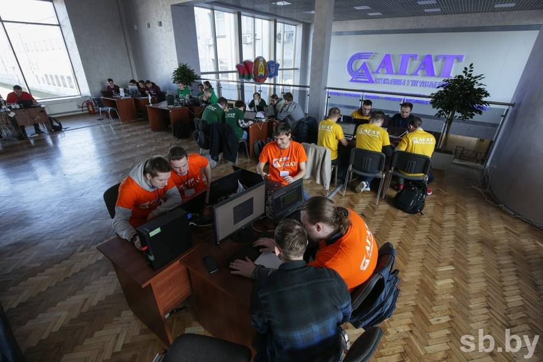
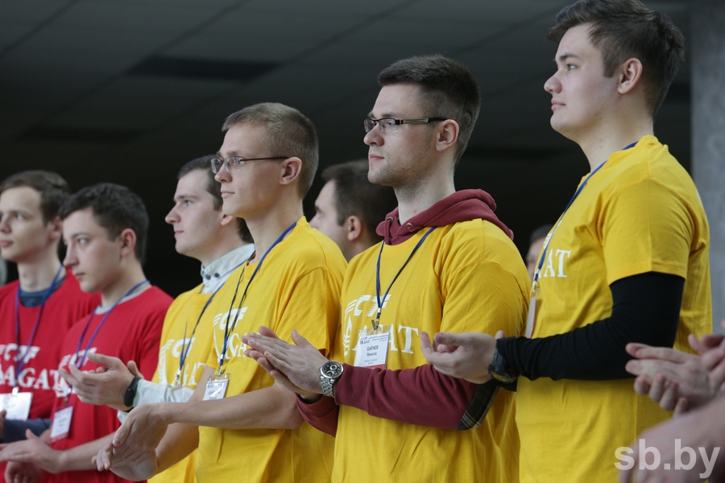

Завершились вторые соревнования по информационной безопасности «AGATCTF-2019»
30-31 марта в ОАО «АГАТ-системы управления» прошли вторые соревнования по информационной безопасности «AgatCTF-2019», проводимые по международным правилам «Capture the flag». В борьбе за первое место участвовали шесть команд, представляющих ведущие белорусские вузы, осуществляющие подготовку IT-специалистов - БГУ, БГУИР, БГТУ и ВГУ им. П.М. Машерова. На торжественном открытии киберсоревнований Председатель Государственного военно-промышленного комитета Республики Беларусь Роман Александрович Головченко подчеркнул важность IT-сферы для экономики страны и необходимость быть готовыми к встрече с возможными угрозами и рисками, связанными с проникновением информационных технологий во все сферы жизни человека.

Директор ОАО «АГАТ-системы управления» Геннадий Станиславович Казаков сделал акцент на ведущей роли подготовки кадров в сфере информационной безопасности для обеспечения защищенности организаций и предприятий от возможных киберугроз и подчеркнул, что участникам, проявившим себя на соревнованиях и показавшим высокий профессиональный уровень, будет предложено стать частью созданного в Обществе подразделения, специализирующегося на аудите информационной безопасности.

Согласно условиям соревнований «AgatCTF-2019», командам были предложены шесть абсолютно одинаковых сервисов, представляющие какие-либо подсистемы «города будущего» – Agat Сity – работоспособность и безопасность которых участником и предстояло поддерживать. В каждом из этих современных городских сервисов (сервис городских билбордов, медицинский центр, сервис аренды велосипедов, система умного дома, сервис доставки товаров при помощи дронов и отдел милиции) были заложены уязвимости. Командам предстояло определить такие уязвимости в своих сервисах и поддерживать их работоспособность, а также воспользоваться найденной программной уязвимостью для атаки сервисов соперников и захвата их «флагов».
На отдельной площадке посетители мероприятия и студенты, пришедшие поддержать команды своих вузов, могли принять участие в развлекательной программе – гостям были предложены конкурсы и развлечения, а также аттракционы виртуальной реальности.
Ближе к середине конкурсного дня лидерство захватила команда «ФПМИ-Х» (БГУ), обойти которую соперникам так и не удалось. По итогам соревнований команда «ФПМИ-Х» заняла первое место, подтвердив результат 2018 года.


По итогам конкурсного дня места распределились следующим образом:
1. ФПМИ-Х (БГУ)
2. BSUIR (БГУИР)
3. ФПМИ-2 (БГУ)
4. Фитоняшки (БГТУ)
5. E2I3 (ВГУ им. П.М.Машерова)
6. Daybreak (БГУИР).

31 марта состоялось награждение победителей и призеров соревнований. Вручая награды, директор ОАО «АГАТ-системы управления» Геннадий Станиславович Казаков подчеркнул, важную роль соревнований AgatCTF в проверке квалификации IT-кадров и пригласил представителей вузов принять участие в следующих соревнованиях. Также посетители второго дня мероприятия приняли участие в конференции по информационной безопасности, с докладами на которой выступили эксперты ОАО «АГАТ-системы управления», а также представители ведущих игроков белорусской IT-индустрии.